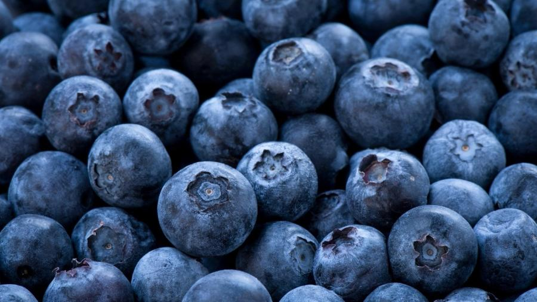
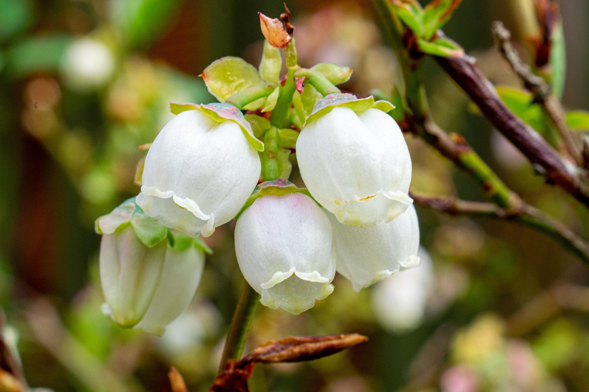
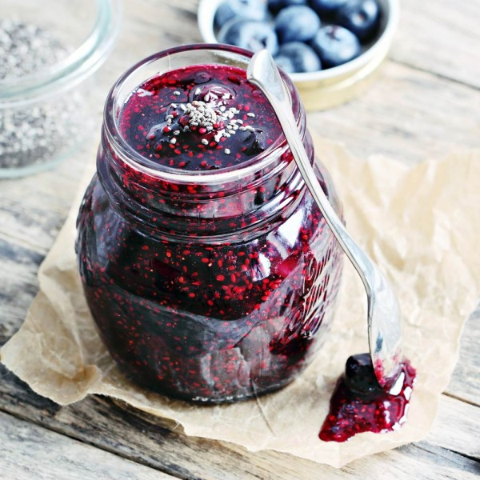
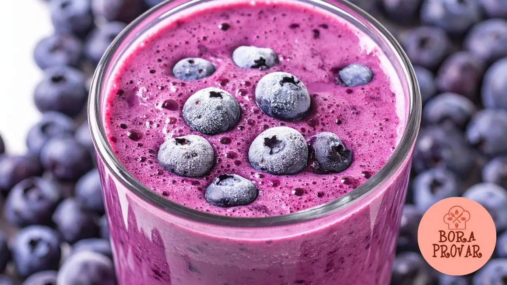

OrigemO mirtilo (ou blueberry) é uma planta de origem desconhecida, mas cresce espontaneamente no Norte da Europa, Ásia e América. É considerado originário do Hemisfério Norte, sendo produzido principalmente nos Estados Unidos e na Europa. No Brasil, o mirtilo foi introduzido em 1983 a partir de plantas da Universidade da Flórida, visando avaliar sua adaptação ao clima brasileiro. |
 Imagem de Mirtilos |
Plantio e épocaOs mirtilos requerem um solo ácido (pH entre 4.5 e 5.5), bem drenado e rico em matéria orgânica. um espaço com luz direta ou meia sombra, protegido de ventos fortes. Prepare uma cova de 30 a 40 cm de profundidade, espaçando as plantas cerca de 1 metro. A melhor época para plantar mirtilos é no início da primavera ou no final do outono, evitando temperaturas extremas. Mantenha o solo úmido, mas evite o encharcamento, e evite a exposição excessiva ao sol, especialmente em regiões quentes. A primeira colheita ocorre após dois anos do plantio, e os frutos podem ser colhidos ao longo de 40 dias, entre dezembro e janeiro. |
FloraçãoEntre abril a junho o mirtilo gera 6 a 14 flores perfeitas e completas. |
|
 Flores de mirtilos |
As melhores variedades precoces de mirtilos |
||
|---|---|---|
| Classificação | Espécie | Qualidade |
| 1º | Terra do Norte | Melhor resistência ao gelo |
| 2º | Rio | Alto rendimento |
| 3º | Espartano | A variedade mais antiga |
As melhores variedades de mirtilos de meia estação |
||
| Classificação | Espécie | Qualidade |
| 1º | Touro | A melhor variedade de frutas grandes e excelente sabor |
| 2º | Northblue | O mais resistente ao inverno |
| 3º | Patriota | Resistente à praga tardia |
Os melhores mirtilos de maturação tardia |
||
| Classificação | Espécie | Qualidade |
| 1º | Isabel | O melhor sabor e aroma |
| 2º | Jersey | Excelente polinizador |
| 3º | Elliot | As melhores propriedades medicinais |
Composição nutricionalO mirtilo é uma fruta de baixa caloria (aprox. 57 kcal/100g) e alto valor nutricional, rico em antioxidantes como antocianinas, vitamina C, vitamina K1 e fibras. É composto majoritariamente por água (~84-89%) e carboidratos, com baixo teor de gordura e proteínas, sendo conhecido por benefícios cardiovasculares e inflamatórios. |
Benefícios de consumoO mirtilo (blueberry) é um "superalimento" rico em antioxidantes, especialmente antocianinas, que combatem radicais livres, reduzem o colesterol LDL e melhoram a saúde cardiovascular. Seu consumo regular melhora a função cognitiva, auxilia no controle da diabetes, previne infecções urinárias e possui ação anti-inflamatória. |
Geleia de mirtiloIngredientes
Modo de preparo
|
 Imagem de jarro de geleia |
Torta de mirtilo (blueberry pie)Massa
Preparo
Recheio
Preparo
|
Imagem de torta de mirtilo |
Montagem
|
Vídeo auxiliativo |
Smoothie de mirtiloIngredientes
Modo de preparo
|
 Imagem de smoothie de mirtilo |